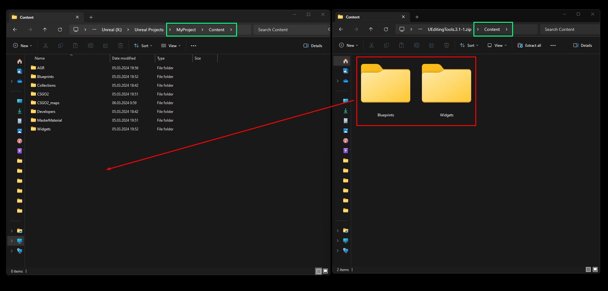
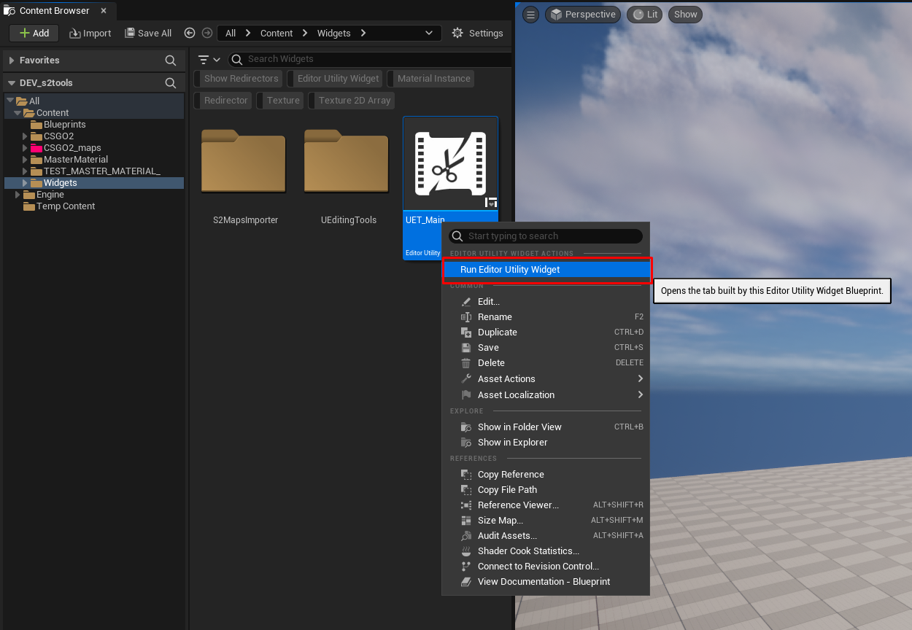
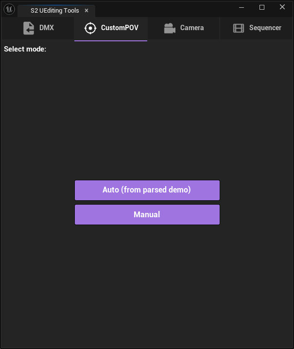
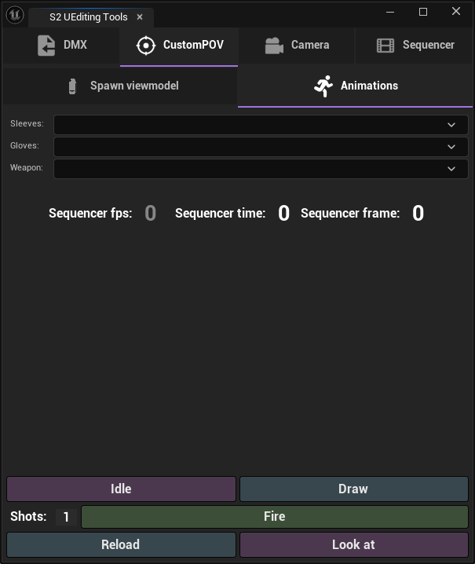
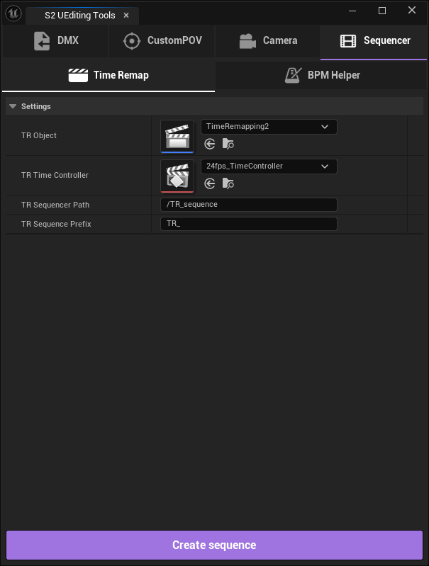

- Парсинг и загрузка демо Читает DMX-файлы (экспорт из Source Filmmaker (SFM)) с данными CS2-демок: позиции игроков, кости скелета, тики, события. Конвертирует всё в структуры, понятные UE5.
- Полный импорт сцены Автоматически создаёт Level Sequence с камерами, анимированными персонажами, оружием, гранатами, статичными моделями и Niagara/Cascade эффектами — по данным из демки.
- POV-режим (от первого лица) Генерирует камеру и рукава/перчатки и оружие конкретного игрока.
- Demo parsing and import
Reads DMX files (exported from Source Filmmaker (SFM)) containing CS2 demo data: player positions, skeletal bones, ticks, and events. Converts everything into UE5-compatible structures. - Full scene import
Automatically creates a Level Sequence with cameras, animated characters, weapons, grenades, static meshes, and Niagara/Cascade effects—based on demo data. - POV mode (first-person)
Generates a camera along with the selected player's arms/gloves and weapon.
- Unreal Engine 5.6 или новее
- Плагин PyToolkit
- Установленная Counter-Strike 2
- Парсер демок
- Unreal Engine 5.6 or newer
- Plugin PyToolkit
- Installed Counter-Strike 2
- Demo Parser

(C:\Program Files\Epic Games\UE_5.6\Engine\Plugins).
Запустите Unreal Engine, включите плагины (Edit > Plugins):
- Editor Scripting Utilities
- Python Editor Script Plugin
- Sequencer Scripting
- Http Blueprint
- PyToolkit


Download and extract the PyToolkit plugin (version 1.8 or higher) into the Plugins folder in the root directory of Unreal Engine (C:\Program Files\Epic Games\UE_5.6\Engine\Plugins).
Launch Unreal Engine and enable the following plugins (via Edit > Plugins):
- Editor Scripting Utilities
- Python Editor Script Plugin
- Sequencer Scripting
- HTTP Blueprint
- PyToolkit
Then restart the engine.
Download the archive with the widget. Open your project folder and navigate to the subfolder "Content" (for example: D:\YourUE5Project\Content). Copy all subfolders from the "Content" folder in the archive and paste them into the "Content" folder in your project.
Launch Unreal Engine. In the Content Browser, locate the "Widgets" folder, right-click the "S2_UEditingTools" widget, and select Run Editor Utility Widget.
General Settings
- Working Directory — папка внутри UE проекта, куда будут импортироваться все данные демо.
- CS2 Demo Parser Path — путь к
.exeфайлу демо парсера CS2. Скачать можно тут. - Save Level — автоматически сохранять уровень после импорта.
- Verbose Logging — включить расширенный вывод логов.
Models Settings
- Receives Decals — разрешить отображение декалей на импортированных моделях.
- Bounds Scale — масштаб границ коллизии моделей. Если значение слишком маленькое, модели могут внезапно исчезать при определённых углах камеры, потому что движок считает их вне кадра. Увеличение этого значения решает проблему, но незначительно снижает производительность.
- Models Scale — масштаб импортируемых моделей.
Misc Settings
- Use Weapon System (If Available) — использовать WeaponSystem блюпринт (если присутствует в проекте) для генерации эффектов выстрелов, крови и декалей от них на стенах.
- Import Particles For Grenades — импортировать эффекты частиц для гранат.
- Grenades Particles Style — тип системы частиц для гранат: Niagara или Cascade (устаревший).
Import Settings
- Import Cameras — импортировать данные камер из демо.
- Import Players — импортировать анимацию игроков.
- Import Weapons — импортировать анимацию оружия.
- Import Nades — импортировать гранаты.
- Import Static Models — импортировать статичные модели.
Buttons Color — цвет кнопок интерфейса виджета.
General Settings
- Working Directory — the folder within your UE project where all demo data will be imported.
- CS2 Demo Parser Path — the path to the CS2 demo parser
.exefile. Download it here. - Save Level — automatically saves the level after import.
- Verbose Logging — enables detailed log output.
Model Settings
- Receives Decals — allows decals to be displayed on imported models.
- Bounds Scale — adjusts the collision bounds scale of models. If the value is too low, models may disappear at certain camera angles because the engine treats them as out of view. Increasing this value fixes the issue but may slightly impact performance.
- Models Scale — sets the scale of imported models.
Misc Settings
- Use Weapon System (If Available) — uses the WeaponSystem Blueprint (if present in the project) to generate shot effects, blood, and related decals on surfaces.
- Import Particles For Grenades — imports particle effects for grenades.
- Grenades Particles Style — selects the particle system type for grenades: Niagara or Cascade (legacy).
Import Settings
- Import Cameras — imports camera data from the demo.
- Import Players — imports player animations.
- Import Weapons — imports weapon animations.
- Import Nades — imports grenades.
- Import Static Models — imports static models.
Buttons Color — sets the color of the widget interface buttons.


Auto (from parsed demo)
- Автоматический режим. Использует данные из предварительно загруженного демо: скрипт самостоятельно определяет снаряжение выбранного игрока — рукава, перчатки и все оружия, которые тот использовал. Пользователь может скорректировать замены через таблицу, после чего одной кнопкой Import Camera and create POV импортируется камера и создаётся полноценная POV в сиквенсере. Результат можно сохранить кнопкой Save POV files для повторного использования.
Manual
Ручной режим, разбитый на два шага.- Шаг 1 — Spawn viewmodel (вкладка слева): Пользователь выбирает камеру из сцены, задаёт масштаб bounds и стиль анимации (Classic или AnimGraph2). После нажатия Next можно будет выбрать нужную модель игрока, перчатки и оружие.
- Шаг 2 — Animations (вкладка справа):
Пользователь выбирает рукава, перчатки и оружие из списка. Кнопки внизу спавнят нужную анимацию для всех выбранных ассетов прямо в сиквенсер на текущий кадр:
- Idle — анимация покоя
- Draw — вытаскивание оружия
- Fire — выстрел (с настройкой количества патронов)
- Reload — перезарядка
- Look at — осмотр оружия
Auto (from parsed demo)
- Automatic mode. Uses data from a previously imported demo: the script automatically determines the selected player's loadout—arms, gloves, and all weapons they used. The user can adjust replacements via a table, then click Import Camera and create POV to import the camera and generate a complete POV in the Sequencer. The result can be saved with Save POV files for reuse.
Manual
Manual mode, divided into two steps.- Step 1 — Spawn viewmodel (left tab):
Select a camera from the scene, set the bounds scale, and choose an animation style (Classic or AnimGraph2). After clicking Next, you can select the desired player model, gloves, and weapon. - Step 2 — Animations (right tab):
Select arms, gloves, and a weapon from the list. The buttons below spawn the corresponding animation for all selected assets directly into the Sequencer at the current frame:- Idle — idle animation
- Draw — weapon draw
- Fire — firing (with ammo count setting)
- Reload — reload
- Look at — weapon inspect

- Camera — выбор камеры из уровня, к которой будут применяться настройки.
Offset
- Rotation — смещение поворота, которое будет добавлено ко всем ключам камеры в секвенсере (X / Y / Z в градусах).
- Location — смещение позиции, которое будет добавлено ко всем ключам камеры в секвенсере (X / Y / Z).
Change FOV
- Normal FOV — угол обзора камеры в обычном режиме (без прицеливания).
- Zoom FOV — угол обзора камеры в режиме прицеливания.
FOV Info
информационный блок, отображающий итоговые значения после применения настроек FOV. Поля доступны только для чтения.- New Horizontal FOV — итоговый горизонтальный угол обзора.
- New Vertical FOV — итоговый вертикальный угол обзора.
- Sensor Width — ширина сенсора камеры.
- Sensor Height — высота сенсора камеры.
- Camera — select a camera from the level to which the settings will be applied.
Offset
- Rotation — rotation offset applied to all camera keys in the Sequencer (X / Y / Z in degrees).
- Location — position offset applied to all camera keys in the Sequencer (X / Y / Z).
Change FOV
- Normal FOV — camera field of view in normal mode (not aiming).
- Zoom FOV — camera field of view in aiming mode.
FOV Info
Informational block displaying the final values after applying FOV settings. Fields are read-only.
- New Horizontal FOV — resulting horizontal field of view.
- New Vertical FOV — resulting vertical field of view.
- Sensor Width — camera sensor width.
- Sensor Height — camera sensor height.

Time Remap
Создаёт вспомогательную Level Sequence для управления скоростью воспроизведения основного сиквенса через Time Remap блюпринт. Настройки:- TR Object — Blueprint актор с логикой тайм-ремапа
- TR Time Controller — объект, управляющий временем (например,
24fps_TimeController) - TR Sequencer Path — путь, по которому будет создан TR-сиквенс
- TR Sequence Prefix — префикс имени для TR-сиквенса
Playback Time — и открывает результат в редакторе.
BPM Helper
Расставляет маркеры в сиквенсере по ритму музыки. Принимает BPM и тактовый размер, вычисляет интервал между битами и расставляет цветные маркеры по всей длине сиквенса:- Зелёные — главные биты (каждый N-й удар по тактовому размеру, подписаны номером такта)
- Белые — второстепенные биты (опционально)
A tab with tools for working in the Sequencer. Contains two sections.
Time Remap
Creates a helper Level Sequence to control the playback speed of the main sequence using a Time Remap Blueprint.
Settings:
- TR Object — Blueprint actor containing the time remap logic
- TR Time Controller — object that controls time (e.g.,
24fps_TimeController) - TR Sequencer Path — path where the TR sequence will be created
- TR Sequence Prefix — name prefix for the TR sequence
The Create sequence button creates a new sequence (or opens an existing one), sets up the Event Track and the Playback Time track, and opens the result in the editor.
BPM Helper
Places markers in the Sequencer based on the rhythm of the music.
Takes BPM and time signature, calculates the interval between beats, and places colored markers across the entire sequence:
- Green — main beats (every Nth beat according to the time signature, labeled with the bar number)
- White — secondary beats (optional)
Useful for synchronizing Sequencer time remapping with music.